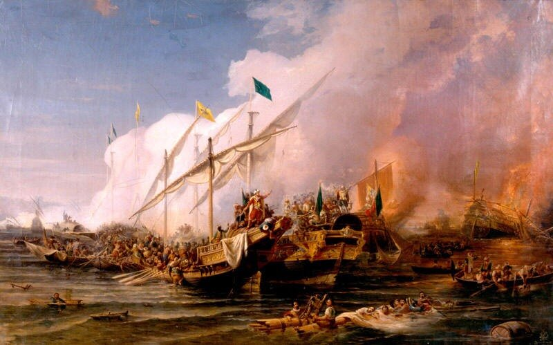
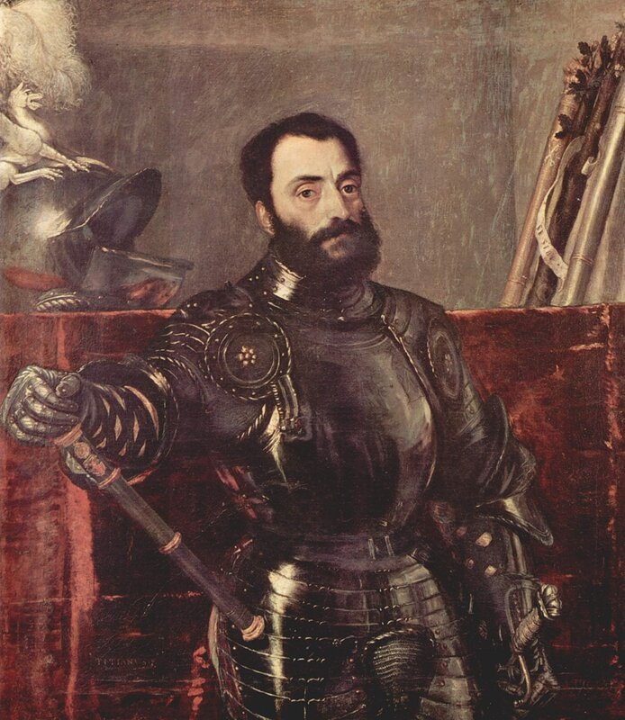

Остряк предложил медаль, в память докучливой войны на помощь соседней державе: с лица русский герб при надписи: С нами Бог; с изнанки герб союзников и надпись: Бог с вами.
Михельсон М.И. Русская мысль и речь

Битва при Превезе. Художник Ohannes Umed Behzad (1866). Турецкий военно-морской музей, Стамбул.
Прежде всего, необходимо сказать, что если для европейских историков и писателей исторических романов сражение при Превезе почти не вызывает никаких эмоций, как будто и не было его, то у апологетов османского военного могущества XVI века это сражение не иначе как поворотный пункт во всей истории военно-морского искусства на Средиземном море.
Решил посмотреть, что по этому поводу пишет объективная (по определению) Wikipedia. На русском языке не пишет ничего. Есть, правда, более общая статья «Турецко-венецианская война (1537—1540)», но в ней всего пару предложений об интересующем нас событии: «Летом 1538 года папа Павел III сумел создать антитурецкую «Священную лигу», в которую вошли Папское государство, Испания, Венецианская республика, Генуэзская республика и Мальтийские рыцари. Воодушевление участников было столь велико, что они уже строили планы раздела Османской империи. Однако в 1538 году флот Лиги потерпел поражение в сражении при Превезе, в котором турки не понесли потерь вообще.» В английской Wiki есть приличная по объему статья «Battle of Preveza (1538)». Но это свалка неизвестно откуда взятых и неизвестно чем обоснованных цифр и фактов. Более взвешенные оценки и цифры в немецкой Wiki, но в целом это практически то же, что и на английском.
Дабы понять, что же в самом деле произошло при Превезе в сентябре 1538 года, начнем по порядку с договора о формировании «Священной лиги.» Его статьи значительно упростят нам понимание последующих событий и позволят избежать многочисленных и многословных комментариев на эту тему, запутавших проблему донельзя.
Приведем текст договора без преамбулы и необязательных выражений и подробностей, присущих текстам дипломатических документов:
Рим, 8 февраля 1538 года.
1. Общие расходы на войну против турок в Леванте будут разделены на шесть частей: одна относится на счет папы, две – оплачивают венецианцы, три – император.
2. Война начнется в 1538 году силами 200 галер, 100 парусных кораблей, 50 тысяч пехоты, 4 тысяч кавалерии.
3. Папа оснащает 36 галер, и если у него не окажется такого количества собственных галер, корпуса их буду предоставлены венецианцами, а оснащение проведено за счет папы.
4. Император должен поставить 82 галеры, столько же поставит Венеция, что вместе с 36 галерами папы составит 200 галер.
5. Все сто парусных кораблей (navi) будут поставлены императором, а все другие расходы по их содержанию будут распределены в отношении 1:2:3 (см. ст.1)
6. Пехотинцы и кавалеристы поставляются в той же пропорции.
7. Вклад других итальянских правителей будет определяться папой с учетом общей пользы союзников.
8. Будет продолжена война достаточными силами в Венгрии.
9. Папа обратится с призывом к другим правителям и народам, особенно к полякам, чтобы они пришли на помощь союзникам.
10. Зарезервировано почетное место королю Франции, если он пожелает присоединиться к Лиге.
11. Сухопутные и морские силы союзников должны быть готовы не позже марта текущего года.
12. Командующим (capitano generale) всеми сухопутными сил будет Франческо Мариа делла Ровере (Francesco Maria della Rovere), герцог Урбинский, а командующим всеми военно-морскими силами (capitan generale) будет Андреа Дориа, принц Мельфи.
13. Провиант следует закупать в странах, где он находится в изобилии, предварительно сняв с него местные налоги.
14. Все разногласия между союзниками выносятся на арбитражное решение папы.
Эти статьи были составлены 8 февраля , прочитаны и одобрены Консисторией в Риме в присутствии министров и послов папы, Венеции и Испании, а ранее были одобрены двором Мадрида и сенатом Венеции. Достигнута договоренность, что все крепости, провинции и города, захваченные у турок, должны быть возвращены тем, кто ими владел ранее: остров Родос мальтийским рыцарям, провинции Африки – королю, венецианцы должны получить свои старые земли в Леванте, а также Валлон и Кастельнуово в Далмации.
Всё. Все остальные подробности, которыми заполнена литература по этому вопросу – из области фантазии и благих пожеланий.
Разработанная в ходе напряженных переговоров модель союза, как показывают последующие события, дала сбои при ее претворении в жизнь, но зато полученный опыт позволил в усовершенствованном виде использовать ее в период подготовки к сражению при Лепанто.
Однако продолжим разговор в следующий раз.